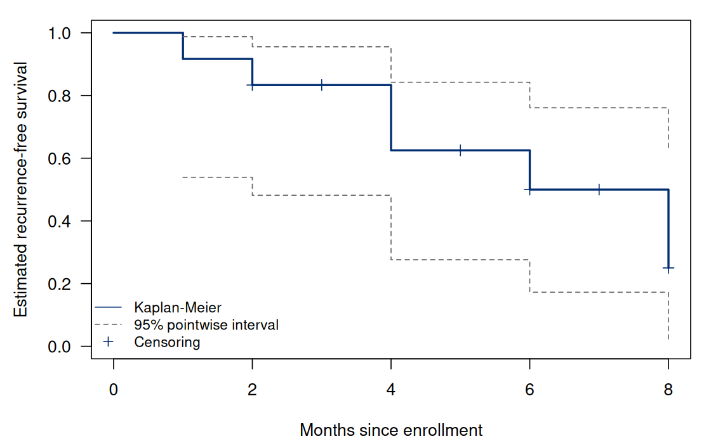
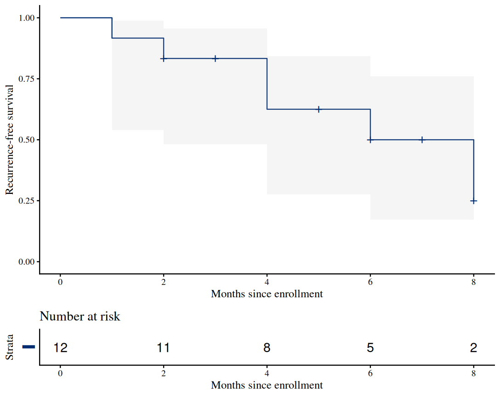
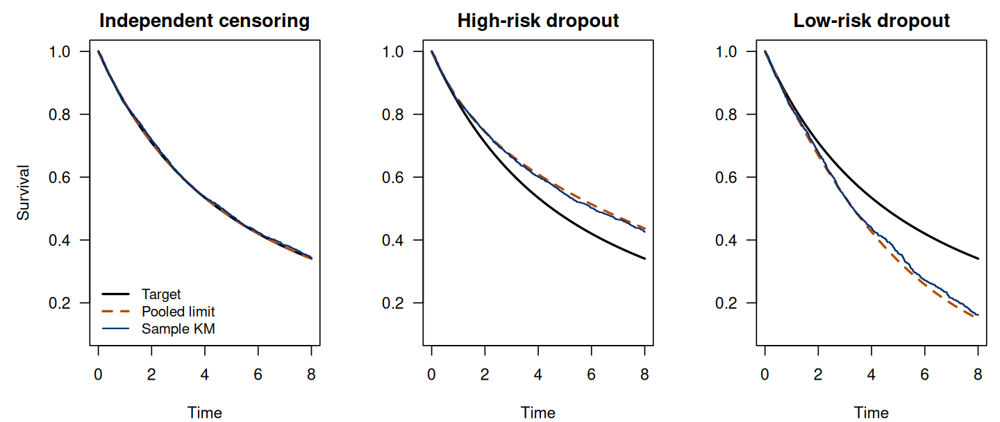
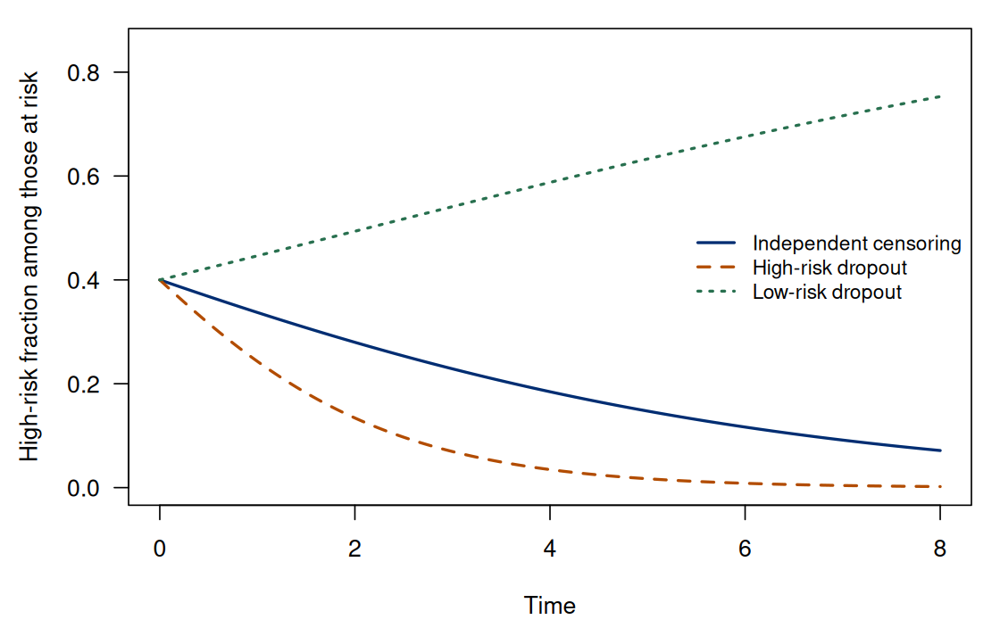

Chapter 3. Estimating survival from incomplete follow-up
3.1 From the observation model to an estimator
Chapter 1 established what the twelve records reveal. Chapter 2 defined the population functions we want to estimate. We now connect those two pieces. The central idea is to estimate the chance of surviving each observed event time among people still at risk, then multiply those conditional survival probabilities. The resulting Kaplan–Meier estimator uses censored people until their observation ends. It does not invent their later event times.
For the initial derivation assume independent, identically distributed subject-level pairs , marginal independence , and positive follow-up support through the reporting horizon. If we model the censoring distribution, its parameters are allowed to vary independently of the event-distribution parameters. These sufficient assumptions let the observable risk set represent those who remain event-free in the population. We will deliberately violate marginal independence later to see which part of the argument fails.
3.2 An observed-data likelihood
First suppose and random are continuous, with event density , survival , censoring density , and censoring survival . An event near requires near and . Under independence its observed-data density contribution is . A censoring record near instead requires near and , giving . Combining event and censoring records yields (3.1) Separate parameter spaces allow the factors involving to be set aside when maximizing over the event distribution. Its likelihood factor is (3.2) A censored person contributes a survival probability. Their contribution is neither the density of an event at nor a factor of one. Fixed administrative limits use the same survival contribution, although a censoring distribution with a point mass is not described by an ordinary density alone. The calculation is an application of observed-data likelihood, not a claim that the unobserved outcomes can be ignored without assumptions.
As a parametric check, if event times follow an exponential distribution, and . Hence (3.3) Observed time from censored participants contributes to the denominator. In the recurring cohort there are six events and 56 person-months, so per month. The fitted five-month survival is . This calculation assumes a constant hazard. Our next estimator relaxes that distributional shape restriction.
3.3 Risk sets and the product-limit likelihood
Let be the distinct observed event times. At each, define the number at risk immediately before events and the number of events: (3.4) The weak inequality in matters. A person must be at risk for their own event. A person censored at the same recorded time also belongs to this denominator under the event-first convention. Both leave later risk sets after the current events have been counted.
Use the discrete conditional-event probabilities from Section 2.4. Parameterize a nonparametric distribution by masses conditional on survival to the observed event times, , with any remaining mass placed beyond observed follow-up. This is a likelihood over probability masses; it is not maximization of an unrestricted continuous density at isolated data points. An event at contributes . Censoring at contributes because it establishes .
Collect the factors involving one . Every one of the events contributes . Each of the other people at risk contributes . Thus (3.5) For , differentiating its log gives , whose zero is . The negative second derivative establishes the maximum. The boundary maxima are zero when and one when .
Substituting these estimates into the conditional-survival product gives (3.6) This is a right-continuous step function with jumps at observed event times. A censoring-only time changes future risk sets without changing the current survival estimate. Likelihood separation justifies the maximization; it does not prove that all random risk sets or estimated increments are independent in a finite sample.
The formula has a useful complete-data check. Without censoring, , so each factor equals . Multiplying telescopes to the empirical proportion of event times exceeding . This remains true with tied events. Kaplan–Meier therefore extends the ordinary empirical survival function rather than replacing it with an unrelated construction.
3.4 Calculate the recurring cohort by hand
At month 1 all twelve people are at risk and one event occurs, giving factor . At month 2 eleven people are at risk, including both the event and the censor at that time. Its factor is ; both records are then removed. The censor at month 3 causes no drop but reduces the month-4 denominator. The two events at month 4 give factor . Table 3.1 carries the calculation through month 8.
| Time | At risk | Events | Censored | Factor | |
|---|---|---|---|---|---|
| 1 | 12 | 1 | 0 | ||
| 2 | 11 | 1 | 1 | ||
| 3 | 9 | 0 | 1 | ||
| 4 | 8 | 2 | 0 | ||
| 5 | 6 | 0 | 1 | ||
| 6 | 5 | 1 | 1 | ||
| 7 | 3 | 0 | 1 | ||
| 8 | 2 | 1 | 1 |
Estimated five-month recurrence-free survival is and risk is . This estimates a population probability under the stated assumptions; it does not recover the two unknown five-month outcomes in Chapter 1. At month 6 the estimate reaches , so the estimated median is six months. An event makes a larger survival drop later because a smaller risk set represents the remaining event-free population.
The final level is not an estimated fraction who will never have an event. One of the two remaining participants is censored at month 8, leaving positive probability unallocated to later times. Extending that step to month 20 is a plotting convention, not new follow-up. By contrast, a fitted curve that reaches zero has allocated all its fitted mass to observed events; extending that zero is part of the fitted distribution, though it still does not prove zero population survival.
The restricted mean from Section 2.7.1 can be estimated at a supported horizon by integrating the step function. At five months, (3.7) The area uses survival on each interval before its right endpoint. A value at one endpoint has zero width and does not change an integral. An unrestricted mean would require the later tail, which these records do not determine without further assumptions.
3.5 Sampling uncertainty at a specified time
For an interior estimate, Greenwood’s variance estimate is (3.8) To understand its scale, write . A local binomial-information and delta-method calculation contributes for an increment on the log-survival scale. Substituting gives the summand in . Since the derivative of at is , a second delta-method transformation multiplies the log-scale variance by . This motivates a large-sample variance approximation. A formal justification uses event-count martingales rather than assuming independent random risk sets; the counting-process representation in Chapter 4 clarifies this distinction. The approximation is intended for a fixed horizon with positive population survival and observation probability, where information grows with the number of independent subjects.
For the five-month estimate, (3.9) The standard error is . A normal interval centered directly on may cross zero or one. The log-minus-log transform provides a probability-respecting alternative. With (3.10) set and . Inverting the decreasing transform gives (3.11) The endpoints reverse. At month 5 the result is approximately , which is wide despite the apparently precise fraction . An interval for risk is obtained by subtracting the survival endpoints from one and again reversing their order.


The nominal 95% level describes repeated-sample coverage at a prespecified time under the assumptions. Connecting pointwise limits does not give 95% simultaneous coverage of an entire curve. Selecting a striking time after inspecting many points changes the question. Moreover, transforming an interval into does not guarantee accurate coverage with a very small risk set.
The transform is undefined when equals zero or one. When , the displayed Greenwood summand also divides by zero. Our implementation reports missing transformed limits at such boundaries rather than claiming certainty. Neither Greenwood’s formula nor a larger sample removes systematic error from dependent censoring.
3.6 Computing and presenting the same survival estimate
3.6.1 From first principles
A short implementation makes the product in (3.6) visible. Use
time and status from the twelve-person cohort,
with status = 1 denoting an observed event. Keep
censoring-only times so that each change in the denominator can be
traced.
Run the complete R example
Dependencies: base R, survival, survminer, ggplot2. This complete block includes the data, setup and calculations. Run it in a fresh R session. Short code excerpts above explain individual steps; this block supplies their shared setup. Figures and tables are written to a temporary directory.
Complete R example
# Complete R example. Synthetic data; no external files are required.
local({
previous.directory <- getwd()
example.directory <- tempfile("biomedical-example-")
dir.create(example.directory)
setwd(example.directory)
on.exit(setwd(previous.directory))
dir.create("generated",showWarnings=FALSE)
# Kaplan-Meier estimation and censoring selection.
options(stringsAsFactors = FALSE, width = 110)
dir.create("figures", showWarnings = FALSE)
dir.create("results", showWarnings = FALSE)
for (package in c("survival", "survminer", "ggplot2")) {
if (!requireNamespace(package, quietly = TRUE))
stop("Install package '", package, "' before running this example.")
}
# BEGIN KM
km.table <- function(time, status) {
stopifnot(length(time) == length(status), length(time) > 0L,
all(is.finite(time)), all(time >= 0), !anyNA(status),
all(status %in% c(0, 1)))
u <- sort(unique(time))
group <- match(time, u)
exits <- tabulate(group, nbins = length(u))
d <- tabulate(group[status == 1], nbins = length(u))
y <- rev(cumsum(rev(exits)))
s <- cumprod(1 - d/y)
g.increment <- numeric(length(u))
ok <- d > 0 & d < y
g.increment[ok] <- d[ok] / (y[ok] * (y[ok] - d[ok]))
g.increment[d == y & d > 0] <- Inf
g <- cumsum(g.increment)
se <- s * sqrt(g)
se[!is.finite(se)] <- NA_real_
lower <- upper <- rep(NA_real_, length(u))
ok <- s > 0 & s < 1 & is.finite(g)
eta <- log(-log(s[ok]))
se.eta <- sqrt(g[ok]) / abs(log(s[ok]))
lower[ok] <- exp(-exp(eta + qnorm(.975) * se.eta))
upper[ok] <- exp(-exp(eta - qnorm(.975) * se.eta))
data.frame(time = u, risk = y, events = d, censored = exits - d,
survival = s, greenwood.sum = g, se = se,
lower = lower, upper = upper, nelson.aalen = cumsum(d/y))
}
# END KM
km.at <- function(tab, t) {
value <- c(1, tab$survival)[findInterval(t, tab$time) + 1L]
# A fitted terminal zero uses all fitted event mass. A positive terminal
# step is not extended into follow-up unsupported by this data set.
if (tail(tab$survival, 1) > 0) value[t > max(tab$time)] <- NA_real_
value
}
rmst.at <- function(tab, horizon) {
if (horizon > max(tab$time) && tail(tab$survival, 1) > 0) return(NA_real_)
cuts <- sort(unique(c(0, tab$time[tab$time < horizon], horizon)))
sum(diff(cuts) * km.at(tab, head(cuts, -1L)))
}
save.plot <- function(stem, draw, width = 7, height = 4.4) {
cairo_pdf(paste0("figures/", stem, ".pdf"), width = width, height = height)
draw(); dev.off()
png(paste0("figures/", stem, ".png"), width = width * 160,
height = height * 160, res = 160)
draw(); dev.off()
}
cohort <- data.frame(id = LETTERS[1:12],
time = c(1, 2, 2, 3, 4, 4, 5, 6, 6, 7, 8, 8),
status = c(1, 1, 0, 0, 1, 1, 0, 1, 0, 0, 1, 0))
tab <- km.table(cohort$time, cohort$status)
stopifnot(identical(as.numeric(tab$risk), c(12, 11, 9, 8, 6, 5, 3, 2)),
max(abs(tab$survival - c(11/12, 5/6, 5/6, 5/8, 5/8, .5, .5, .25))) < 1e-12,
abs(tab$greenwood.sum[tab$time == 5] - 7/120) < 1e-12,
abs(tab$se[tab$time == 5]^2 - 35/1536) < 1e-12,
abs(rmst.at(tab, 5) - 101/24) < 1e-12,
abs(rmst.at(tab, 8) - 35/6) < 1e-12,
is.na(km.at(tab, 9)))
complete <- km.table(c(1, 2, 2, 5), c(1, 1, 1, 1))
grid.check <- c(0, 1, 1.5, 2, 4, 5, 9)
stopifnot(max(abs(km.at(complete, grid.check) -
vapply(grid.check, function(t) mean(c(1, 2, 2, 5) > t), 0.0))) < 1e-12,
is.na(tail(complete$lower, 1)),
all(km.table(c(1, 2, 3), c(0, 0, 0))$survival == 1))
if (file.exists("results/ch01-cohort.csv")) {
first <- read.csv(text="id,time,status,known.at.5,event.by.5\nA,1,1,TRUE,1\nB,2,1,TRUE,1\nC,2,0,FALSE,NA\nD,3,0,FALSE,NA\nE,4,1,TRUE,1\nF,4,1,TRUE,1\nG,5,0,TRUE,0\nH,6,1,TRUE,0\nI,6,0,TRUE,0\nJ,7,0,TRUE,0\nK,8,1,TRUE,0\nL,8,0,TRUE,0\n")
stopifnot(identical(first$id, cohort$id), identical(first$time, as.integer(cohort$time)),
identical(first$status, as.integer(cohort$status)))
}
# Standard R workflow: the same twelve records and event-first risk sets.
fit <- survival::survfit(survival::Surv(time, status) ~ 1,
data = cohort, stype = 1, ctype = 1, robust = FALSE,
conf.int = .95, conf.type = "log-log", conf.lower = "usual")
fitted.rows <- summary(fit, censored = TRUE)
stopifnot(max(abs(fit$surv - tab$survival)) < 1e-12,
all(fit$n.risk == tab$risk),
all(fit$n.event == tab$events),
max(abs(fitted.rows$std.err - tab$se), na.rm = TRUE) < 1e-12,
max(abs(fit$lower - tab$lower), na.rm = TRUE) < 1e-12,
max(abs(fit$upper - tab$upper), na.rm = TRUE) < 1e-12)
package.comparison <- data.frame(time = tab$time, n.risk = fit$n.risk,
n.event = fit$n.event, direct = tab$survival, survfit = fit$surv,
se = fitted.rows$std.err, lower = fit$lower, upper = fit$upper)
write.csv(package.comparison, "results/ch03-package-comparison.csv", row.names = FALSE)
# Isolate the CI choice: point estimates and Greenwood SE remain unchanged.
ci.methods <- c("plain", "log", "log-log")
at5 <- tab[tab$time == 5, ]
zcrit <- qnorm(.975)
hand.ci <- rbind(
plain = pmin(1, pmax(0, at5$survival + c(-1, 1)*zcrit*at5$se)),
log = pmin(1, exp(log(at5$survival) + c(-1, 1)*zcrit*sqrt(at5$greenwood.sum))),
`log-log` = c(at5$lower, at5$upper))
ci.comparison <- do.call(rbind, lapply(seq_along(ci.methods), function(j) {
method <- ci.methods[j]
curve <- survival::survfit(survival::Surv(time, status) ~ 1,
data = cohort, stype = 1, ctype = 1, robust = FALSE,
conf.int = .95, conf.type = method, conf.lower = "usual")
report <- summary(curve, times = 5, extend = FALSE)
stopifnot(abs(report$surv - 5/8) < 1e-12,
abs(report$std.err - at5$se) < 1e-12,
max(abs(c(report$lower, report$upper) - hand.ci[j, ])) < 1e-12)
data.frame(method = method, survival = report$surv, se = report$std.err,
lower = report$lower, upper = report$upper)
}))
write.csv(ci.comparison, "results/ch03-ci-methods.csv", row.names = FALSE)
ci.lines <- c("\\begin{tabular}{lrrrr}\\toprule",
"Interval scale & Survival & SE & Lower & Upper\\\\\\midrule")
for (j in seq_len(nrow(ci.comparison))) {
rr <- ci.comparison[j, ]
ci.lines <- c(ci.lines, sprintf("%s & %.6f & %.6f & %.6f & %.6f\\\\",
rr$method, rr$survival, rr$se, rr$lower, rr$upper))
}
writeLines(c(ci.lines, "\\bottomrule\\end{tabular}"),
"results/ch03-ci-methods-table.tex")
# Presentation changes neither the fit nor its confidence-interval method.
km.presentation <- survminer::ggsurvplot(fit, data = cohort,
conf.int = TRUE, conf.int.alpha = .15, censor = TRUE,
risk.table = TRUE, risk.table.height = .23,
xlim = c(0, 8), break.time.by = 2, palette = "#002D72",
xlab = "Months since enrollment", ylab = "Recurrence-free survival",
legend = "none", risk.table.y.text = FALSE,
ggtheme = ggplot2::theme_classic(base_size = 11, base_family = "serif"),
tables.theme = ggplot2::theme_classic(base_size = 11, base_family = "serif"))
risk.display <- km.presentation$data.survtable
curve.display <- km.presentation$data.survplot
curve.rows <- match(fit$time, curve.display$time)
expected.risk <- vapply(risk.display$time,
function(t) sum(cohort$time >= t), numeric(1))
stopifnot(all(risk.display$n.risk == expected.risk),
!anyNA(curve.rows),
max(abs(curve.display$surv[curve.rows] - fit$surv)) < 1e-12,
max(abs(curve.display$lower[curve.rows] - fit$lower)) < 1e-12,
max(abs(curve.display$upper[curve.rows] - fit$upper)) < 1e-12)
write.csv(risk.display, "results/ch03-presentation-risk-table.csv", row.names = FALSE)
save.plot("ch03-standard-workflow", function() print(km.presentation),
width = 6.8, height = 5.4)
write.csv(data.frame(package = c("R", "survival", "survminer", "ggplot2"),
version = c(as.character(getRversion()),
vapply(c("survival", "survminer", "ggplot2"),
function(p) as.character(utils::packageVersion(p)), character(1)))),
"results/ch03-package-versions.csv", row.names = FALSE)
write.csv(tab, "results/ch03-km-table.csv", row.names = FALSE)
save.plot("ch03-km", function() {
par(mar = c(4.3, 4.5, 1, 1), las = 1)
plot(c(0, tab$time), c(1, tab$survival), type = "s", col = "#002D72", lwd = 2,
xlim = c(0, 8), ylim = c(0, 1), xlab = "Months since enrollment",
ylab = "Estimated recurrence-free survival")
lines(tab$time, tab$lower, type = "s", lty = 2, col = "gray40")
lines(tab$time, tab$upper, type = "s", lty = 2, col = "gray40")
cc <- cohort$time[cohort$status == 0]
points(cc, km.at(tab, cc), pch = 3, col = "#002D72")
legend("bottomleft", c("Kaplan-Meier", "95% pointwise interval", "Censoring"),
lty = c(1, 2, NA), pch = c(NA, NA, 3),
col = c("#002D72", "gray40", "#002D72"), bty = "n", cex = .85)
})
# Exact latent-stratum model for static figures and local interaction.
pi.high <- .4
lambda <- c(.08, .35)
admin <- 8
regimes <- data.frame(regime.id = c("independent", "high.dropout", "low.dropout"),
label = c("Independent censoring", "High-risk dropout", "Low-risk dropout"),
c.low = c(.08, .04, .50), c.high = c(.08, .50, .04))
true.surv <- function(t) (1-pi.high)*exp(-lambda[1]*t) + pi.high*exp(-lambda[2]*t)
pool.limit <- function(t, c.low, c.high) {
b <- lambda[2]+c.high-lambda[1]-c.low
if (abs(b) < 1e-10) return(exp(-(lambda[1]+(lambda[2]-lambda[1])*pi.high)*t))
exp(-lambda[1]*t + (lambda[2]-lambda[1])/b * log(1-pi.high+pi.high*exp(-b*t)))
}
risk.fraction <- function(t, c.low, c.high) {
a <- pi.high*exp(-(lambda[2]+c.high)*t)
a / ((1-pi.high)*exp(-(lambda[1]+c.low)*t)+a)
}
observe <- function(z, tt, uu, c.low, c.high) {
cc <- -log(uu)/ifelse(z == 1, c.high, c.low)
cc <- pmin(cc, admin)
data.frame(z = z, time = pmin(tt, cc), status = as.integer(tt <= cc))
}
set.seed(6752026)
n <- 3000
z <- rbinom(n, 1, pi.high)
tt <- rexp(n, rate = lambda[z+1L])
uu <- runif(n)
grid <- seq(0, admin, length.out = 321)
curves <- vector("list", nrow(regimes))
for (r in seq_len(nrow(regimes))) {
rr <- regimes[r, ]
dat <- observe(z, tt, uu, rr$c.low, rr$c.high)
kt <- km.table(dat$time, dat$status)
curves[[r]] <- data.frame(regime.id = rr$regime.id, regime = rr$label,
time = grid, target = true.surv(grid), sample.km = km.at(kt, grid),
pooled.limit = pool.limit(grid, rr$c.low, rr$c.high),
high.risk.fraction = risk.fraction(grid, rr$c.low, rr$c.high),
n.risk = vapply(grid, function(t) sum(dat$time >= t), 0L),
expected.n.risk = n*((1-pi.high)*exp(-(lambda[1]+rr$c.low)*grid)+
pi.high*exp(-(lambda[2]+rr$c.high)*grid)))
}
curve.data <- do.call(rbind, curves)
write.csv(curve.data, "results/ch03-censoring-curves.csv", row.names = FALSE)
write.csv(regimes, "results/ch03-censoring-regimes.csv", row.names = FALSE)
stopifnot(max(abs(pool.limit(grid,.08,.08)-true.surv(grid))) < 1e-12,
pool.limit(5,.04,.5) > true.surv(5), pool.limit(5,.5,.04) < true.surv(5),
all(curve.data$high.risk.fraction >= 0 & curve.data$high.risk.fraction <= 1))
save.plot("ch03-censoring", function() {
par(mfrow = c(1,3), mar = c(4,4.7,2.1,.7), las = 1, cex = .86)
for (r in seq_len(nrow(regimes))) {
ss <- curves[[r]]
plot(ss$time, ss$target, type = "l", lwd = 2, ylim = c(.1,1),
xlab = "Time", ylab = if (r == 1) "Survival" else "", main = regimes$label[r])
lines(ss$time, ss$pooled.limit, lwd = 2, lty = 2, col = "#B24C00")
lines(ss$time, ss$sample.km, type = "s", lwd = 1.3, col = "#002D72")
if (r == 1) legend("bottomleft", c("Target", "Pooled limit", "Sample KM"),
lty = c(1,2,1), col = c("black","#B24C00","#002D72"),
lwd = c(2,2,1.3), bty = "n", cex = .9)
}
}, width = 9, height = 3.8)
save.plot("ch03-risk-composition", function() {
par(mar = c(4.3,4.5,1,1), las = 1)
plot(grid, curves[[1]]$high.risk.fraction, type = "l", lwd = 2,
ylim = c(0,.85), xlab = "Time", ylab = "High-risk fraction among those at risk",
col = "#002D72")
lines(grid, curves[[2]]$high.risk.fraction, lwd = 2, lty = 2, col = "#B24C00")
lines(grid, curves[[3]]$high.risk.fraction, lwd = 2, lty = 3, col = "#28704F")
legend("right", regimes$label, lty = 1:3, lwd = 2,
col = c("#002D72","#B24C00","#28704F"), bty = "n", cex = .85)
})
set.seed(6752027)
B <- 300L; n.mc <- 500L; horizon <- 5
rows <- vector("list", B*nrow(regimes)); k <- 0L
for (b in seq_len(B)) {
z <- rbinom(n.mc, 1, pi.high)
tt <- rexp(n.mc, rate = lambda[z+1L]); uu <- runif(n.mc)
for (r in seq_len(nrow(regimes))) {
rr <- regimes[r, ]
dat <- observe(z, tt, uu, rr$c.low, rr$c.high)
pooled <- km.at(km.table(dat$time, dat$status), horizon)
s0 <- km.at(km.table(dat$time[z==0], dat$status[z==0]), horizon)
s1 <- km.at(km.table(dat$time[z==1], dat$status[z==1]), horizon)
adjusted <- (1-mean(z))*s0 + mean(z)*s1
k <- k+1L
rows[[k]] <- data.frame(replicate=b, regime=rr$label,
pooled=pooled, standardized=adjusted)
}
}
mc <- do.call(rbind, rows)
write.csv(mc, "results/ch03-monte-carlo-replicates.csv", row.names=FALSE)
summaries <- list()
for (rr in regimes$label) for (method in c("pooled", "standardized")) {
value <- mc[mc$regime==rr, method]; ok <- is.finite(value)
summaries[[length(summaries)+1L]] <- data.frame(
regime=rr, method=method, B=B, valid=sum(ok), missing=sum(!ok), target=true.surv(5),
mean.available=mean(value[ok]), bias.available=mean(value[ok])-true.surv(5),
sd.available=sd(value[ok]), mcse.mean.available=sd(value[ok])/sqrt(sum(ok)),
rmse.available=sqrt(mean((value[ok]-true.surv(5))^2)))
}
summary.mc <- do.call(rbind, summaries)
write.csv(summary.mc, "results/ch03-monte-carlo-summary.csv", row.names=FALSE)
tablines <- c("\\begin{tabular}{lrrrr}\\toprule",
"Regime & Mean & Mean minus target & SD & MCSE\\\\\\midrule")
for (i in which(summary.mc$method=="pooled")) {
a <- summary.mc[i,]
tablines <- c(tablines, sprintf("%s & %.6f & %.6f & %.6f & %.6f\\\\",
a$regime,a$mean.available,a$bias.available,a$sd.available,a$mcse.mean.available))
}
writeLines(c(tablines,"\\bottomrule\\end{tabular}"),"results/ch03-monte-carlo-table.tex")
writeLines(capture.output(sessionInfo()),"results/ch03-sessionInfo.txt")
print(tab, row.names=FALSE)
print(ci.comparison, row.names=FALSE)
print(package.comparison[package.comparison$time %in% c(4, 5, 6, 8), ], row.names=FALSE)
print(summary.mc, row.names=FALSE)
cat("\nSelected numerical results\n")
for (candidate in c("reader", "summary", "summary.mc", "perf", "comparison", "route.comparison", "test", "tab", "exact", "workflow.ci", "coef.tab", "evaluation.table")) {
if (exists(candidate, inherits=FALSE)) {
value <- get(candidate, inherits=FALSE)
if (is.data.frame(value) || is.matrix(value)) { cat(candidate, "\n"); print(utils::head(value,8)) }
}
}
cat("R", as.character(getRversion()), "\n")
})
This excerpt shows a step inside the preceding complete R example; it uses that block’s data and setup.
u <- sort(unique(time))
group <- match(time, u)
exits <- tabulate(group, nbins = length(u))
d <- tabulate(group[status == 1], nbins = length(u))
y <- rev(cumsum(rev(exits)))
S <- cumprod(1 - d/y)
Vlog <- cumsum(d / (y * (y-d)))
SE <- S * sqrt(Vlog)
data.frame(time = u, n.risk = y, n.event = d, survival = S, SE = SE)The reversed cumulative sum is exactly the count with
.
It does not depend on within-tie row order. Removing censors before
computing the current event denominator would implement a different
observation convention and gives the wrong answer for our data. The
final two lines translate (3.8) directly into R. They
apply to this cohort, whose event fractions remain below one. The full
km.table() function in the complete R example also handles
the zero-event and terminal all-fail boundaries, validates the inputs,
and computes the log-minus-log limits.
At month 5 this implementation returns , , , and . Zero events at month 5 do not erase the four previous events or their accumulated uncertainty. Evaluating the step function at five months gives the survival estimate after all events up through that time. Integrating its earlier levels gives the restricted mean in (3.7). The complete R example keeps both operations explicit and refuses to extend a positive last step beyond observed follow-up.
3.6.2 Standard R workflow
The established survival package fits the same estimator
from Surv(time, status). Specify the choices that link its
output to our calculation [1]:
This excerpt shows a step inside the preceding complete R example; it uses that block’s data and setup.
fit <- survival::survfit(survival::Surv(time, status) ~ 1,
data = cohort, stype = 1, ctype = 1, robust = FALSE,
conf.int = .95, conf.type = "log-log", conf.lower = "usual")
summary(fit, censored = TRUE)
summary(fit, times = 5, extend = FALSE)Here stype = 1 selects the direct survival product,
ctype = 1 selects uncorrected Nelson–Aalen
cumulative-hazard increments, and robust = FALSE requests
the usual model-based variance for these independent, equally weighted
subjects. The second choice concerns the accompanying cumulative-hazard
estimate; it does not turn the direct survival product into its
exponential. The event-first risk counts, point estimates, and
log-minus-log intervals agree with the explicit calculation. The same
data, target, and censoring assumptions underlie both routes. Package
agreement says nothing about whether censoring in a scientific study is
independent.
Read each output column on its intended scale.
summary(fit) reports a survival-scale standard error,
whereas fit$std.err is on the log-survival scale for this
ordinary survival fit. At requested times, the event count is ordinarily
the number since the previous reported time, rather than the count at
precisely that time [2]. Thus the single-row
request at month 5 reports four accumulated events, although the
risk-table row for month 5 has zero events. The reported number at risk
is six, immediately before that time; the survival value
is after any events there.
The default confidence-interval scale is "log", which
differs from the chapter’s "log-log" choice. Table 3.2 holds the curve and Greenwood
standard error fixed while changing the transformation. The log
interval’s untruncated upper endpoint is
,
so the package limits it to one. The direct calculation reproduces all
three sets of limits using their stated transformations and probability
bounds. They are different approximations to pointwise uncertainty, not
three different survival targets.
| Interval scale | Survival | SE | Lower | Upper |
|---|---|---|---|---|
| plain | 0.625000 | 0.150952 | 0.329140 | 0.920860 |
| log | 0.625000 | 0.150952 | 0.389310 | 1.000000 |
| log-log | 0.625000 | 0.150952 | 0.276152 | 0.842258 |
For presentation, survminer::ggsurvplot() takes the
fitted curve rather than fitting a new one [3]:
This excerpt shows a step inside the preceding complete R example; it uses that block’s data and setup.
p <- survminer::ggsurvplot(fit, data = cohort,
conf.int = TRUE, censor = TRUE, risk.table = TRUE,
risk.table.height = .23, xlim = c(0, 8), break.time.by = 2,
palette = "#002D72", legend = "none", risk.table.y.text = FALSE,
xlab = "Months since enrollment", ylab = "Recurrence-free survival",
ggtheme = ggplot2::theme_classic(base_size = 11))
print(p)Use print(p) to draw the combined curve and risk table,
including when an R script writes to a graphics device. Displaying
p$plot alone omits the table. The conf.int
option displays the limits already stored in fit; it does
not change their transformation. The counts at months 0, 2, 4, 6, and 8
are 12, 11, 8, 5, and 2. Seeing the final denominator alongside the
curve makes the last drop interpretable. Styling a plot cannot repair
uncertain status coding, informative loss to follow-up, or an
unsupported tail.


ggsurvplot(). The shaded region displays the approximate
pointwise log-minus-log limits; the row below shows the shrinking risk
set.The complete R example contains the cohort, both computational routes, the interval comparison, and the plotting call. Its base-R estimator is intended for single-event, right-censored records from a common time origin. It does not accept interval-censored, delayed-entry, or recurrent-event observations merely because they can be coerced into two numerical columns.
3.7 A correctly computed curve can target the wrong population
The twelve-person calculation shows how Kaplan–Meier uses each record. To examine its censoring assumption, we now generate new cohorts from a population whose event-time distribution is known. This population differs from both the twelve-person cohort and the two-stratum numerical example in Chapter 1. Let with . Conditional on , generate event and random-censoring times independently: (3.12) Set . The marginal target is (3.13) It does not depend on the censoring rates. We compare independent censoring , high-risk dropout , and low-risk dropout . All three preserve independence within strata. Only the first preserves it marginally in this construction.
Before administrative closure, the high-risk proportion among people who are both event-free and still observable is (3.14) This follows by Bayes’ rule using the within-stratum probability of and . The event hazard in that observable risk set is . The target-population event hazard instead weights strata among all event-free people, without the censoring terms. Equal censoring rates cancel from (3.14); unequal rates select the mixture further. Even under independent censoring, the mixture among survivors differs from the baseline mixture because events remove high-risk people sooner.
An exact probability limit makes the distortion particularly clear. To integrate the selected risk-set hazard explicitly, put and . Here is a difference of exit rates, not the Weibull time scale used earlier. For , . Integrating the observed hazard and exponentiating its negative gives the large-sample pooled limit (3.15) When , use instead. These formulas concern times supported before administrative closure, with the continuous left limit available at its endpoint. They do not justify extrapolating beyond eight.
At time 5 the target is . The independent-censoring limit equals it, the high-risk-dropout limit is , and the low-risk-dropout limit is . Preferentially losing high-risk participants makes observed survival appear better; preferentially losing low-risk participants makes it appear worse. Neither sign follows from the censoring percentage alone.




The script also generates 300 independent cohorts of 500 people with seed 6752027. Regimes within each replicate share underlying event times and uniform random numbers, permitting a paired comparison. The resulting pooled five-unit estimates are summarized in Table 3.3.
| Regime | Mean | Mean minus target | SD | MCSE |
|---|---|---|---|---|
| Independent censoring | 0.470830 | -0.000872 | 0.024771 | 0.001430 |
| High-risk dropout | 0.556028 | 0.084326 | 0.027755 | 0.001602 |
| Low-risk dropout | 0.335115 | -0.136587 | 0.030486 | 0.001760 |
Increasing cohort size concentrates the curve around its limit; it does not make an incorrect limit equal the target. Increasing the number of simulation replicates refines the Monte Carlo summary, a different source of precision. Here exact limits give an independent check on what the simulation illustrates.
If is measured, conditional independent censoring can justify separate curves and , then standardization using baseline population weights: . Weighting by would instead reuse the selected risk-set composition. Stratification also requires sufficient follow-up in each stratum. In nine of the 300 high-risk-dropout replicates, a stratum has a positive terminal step before the target horizon. The code marks those standardized estimates as missing rather than silently extrapolating. Its available-case summaries therefore describe computable replicates, not unconditional estimation bias.
The three-regime comparison shows the survival curve together with the composition of its risk sets. Before revealing those curves, consider which direction preferential high-risk or low-risk dropout should move the pooled estimate. The fixed population and matched event times make censoring the feature being changed. The true curve is visible only because this is an invented model, not because a real censored cohort supplies it.
3.8 Interpretation and checks that matter
A flat segment means no observed event produced a jump; it does not establish zero population hazard. A large late drop may reflect a small denominator. Report numbers at risk at the horizons readers will interpret. Inspect status coding, time origins, duplicate records, ties, and the reasons for loss to follow-up before treating a clean plot as evidence of a clean design.
For the recurring cohort, a defensible report is: “Estimated five-month recurrence-free survival was 62.50%, with an approximate 95% pointwise interval of 27.62% to 84.23%, under independent right censoring.” The small cohort, limited tail, and synthetic setting qualify its use. Nothing in the computation establishes a treatment effect, individual future outcomes, or real-world cumulative incidence in the presence of competing death. The endpoint, observation scheme, estimator, and interpretation have to remain connected.
Explore: who remains in the risk set?
The event-time distribution stays fixed. Change the censoring mechanism, predict whether pooled Kaplan–Meier will tend to overestimate or underestimate survival, then reveal the curves. Censoring is independent of event time within the two risk groups in all three regimes.
Predict the direction before revealing. Which group becomes disproportionately represented among those still under observation?
Static counterpart: the chapter’s censoring and risk-composition figures. Curves use the executed R experiment, n = 3,000 per regime; the limit is computed from the stated model. The display samples the curves on a 0.025-month grid. A change in one sample is not itself evidence of population bias.
3.9 Exercises
Risk sets and tied records. Use the twelve-person cohort with observed follow-up months and event indicators , in participant order A–L. Everyone enters at zero. Same-time events are counted before censoring; a censor at establishes . Write the event-only discrete likelihood as , deriving the exponents from individual records. Maximize over each , including boundaries. Prove that without censoring the resulting survival product equals the empirical survival function even with tied events. Finally, remove the month-2 censor before computing that time’s event denominator while leaving later risk sets correct. Calculate the resulting erroneous five-month estimate.
The portion of a lifetime observed. Use the twelve-person cohort with observed follow-up months and event indicators , in participant order A–L. Everyone enters at zero. Same-time events are counted before censoring; a censor at establishes . Calculate the Kaplan–Meier restricted means through months 5 and 8 by integrating its step levels, and find its median using the first time at which survival is at most one half. Explain why these summaries do not identify the unrestricted population mean or the unobserved tail.
Pointwise uncertainty on two scales. Use the twelve-person cohort with observed follow-up months and event indicators , in participant order A–L. Everyone enters at zero. Same-time events are counted before censoring; a censor at establishes . At month 6, compute Greenwood’s variance for the survival product. Construct a pointwise approximate 95% log-minus-log interval with , then convert it to an event-risk interval. Explain both endpoint reversals. Distinguish pointwise from simultaneous coverage and state which censoring assumption this calculation requires.
Selection changes the pooled hazard. Let . Conditional on , event and censoring times are independent exponential variables with rates , and , with administrative closure at month 8. For , derive the high-risk proportion among observable event-free people and the hazard that a pooled Kaplan–Meier curve accumulates. Put and ; derive the pooled survival limit for and . Evaluate it at month 5 for . Compare with marginal survival and explain why baseline-weighted stratum estimates target it under adequate stratum support.